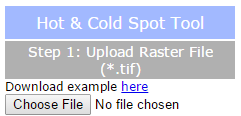

This application find hot and cold spots in geospatial data. For more information on the outlier analysis method, please click here.
Hot and Cold Spot Analysis Tool
Step 1
Click the "Choose File" button and navigate to a TIFF raster file (with an extension .tif). Click "Calculate".
Results
After a short time, the map should display your layer. Default pixels are shown in white, hot spots in red, and cold spots in blue (represented by classes ranging from -3 to 3, respectively, in the raster). You can clear the map to begin with a new dataset by clicking the "Clear" button. You may download a TIFF file with your results by clicking "Download Raster Data" or clear the map to begin with a new dataset by clicking the "Clear" button.
Legend
The legend will automatically populate after you calculate hot and cold spots in your data.
Basemap picker
Click the basemap button to toggle between the topographic basemap and a satellite imagery basemap.